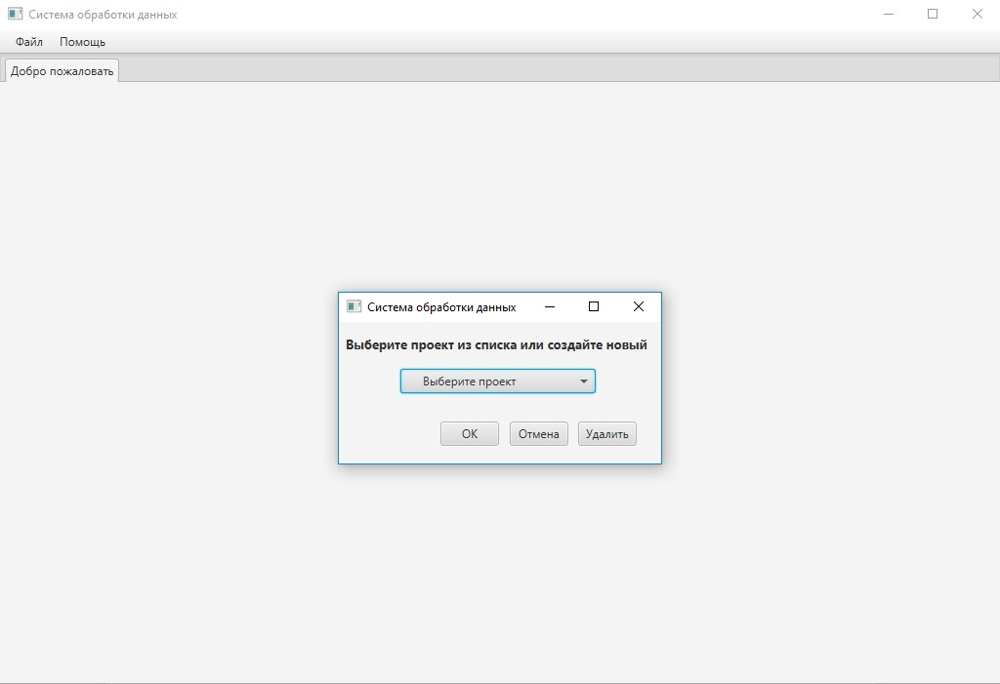

Загрузка проекта – это выбор для работы одного из созданных и сохраненных ранее проектов. Чтобы загрузить существующий проект, необходимо выбрать пункт меню «Загрузить проект». Интерфейс загрузки проекта показан на рисунке 3.
Рисунок 3. Загрузка существующего проекта